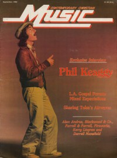

Phil Keaggy
|  September 1980 Contemporary Christian Music |
 May 1983 Christian Herald |
Media coverage
- Jul 1976 in Free Love "Love Broke Thru"
- Jan 1979 in HIS "Interview: Phil Keaggy", by David Hazard
- Sep 1980 in Contemporary Christian Music "Spirit-Philled", by David Hazard
- Apr 1981 in Contemporary Christian Music "Phil Keaggy"
- 1981 in New Christian Music "Phil Keaggy"
- Oct 1982 in Contemporary Christian Music "Bridging The Atlantic", by Carolyn A. Burns
- Apr 1986 in Contemporary Christian Magazine "Keaggy Fans Finally Get Their Phil", by Chris Willman
- May 1986 in Heaven's Metal "News Item: Phil Keaggy"
- Sep 1986 in Contemporary Christian Magazine "In Concert: Rainbow Music Hall, Denver, Colorado", by Melissa D. Campbell
- Sum 1987 in Harvest Rock Syndicate "More Music For The New Frontier", by T. L. Faris
- Jan 1988 in CCM "Toys in the Band: Phil Keaggy"
- Mar 1988 in CCM "In Concert: Pulpit Rock Church, Colorado Springs, CO", by Jeffrey Englestad
- Nov 1988 in Notebored "Phil Keaggy", by Brent Hershey
- Win 1988 in Harvest Rock Syndicate "Concert Review: The Keaggy / Stonehill Band, Webster Grove, MO", by Brian Quincy Newcomb
- Jan 1989 in CCM "Sunday's Child Is Full of Grace", by Brian Quincy Newcomb
- Jan 1989 in CCM "Phil Keaggy: Guitar Player", by Brian Quincy Newcomb
- Mar 1989 in Charisma & Christian Life "Music: Playing It Dangerously", by Elisabeth D Gilland
- Sum 1989 in Harvest Rock Syndicate "An Inside Look", by T. L. Faris
- May 1990 in CCM "Musicianaries For Christ: Compassion International: Taking A Stand"
- Aug 1990 in CCM "In Concert: King's Place, Columbus, OH", by Mike Bennett
- Oct 1990 in CCM "In The News: Keaggy, Stonehill Concert Benefits Love & Action"
- Jun 1991 in CCM "In Concert: Mott Auditorium, Pasadena, CA", by David Geisler
- Jul 1991 in CCM "Christian Musician: Beyond Words", by Thom Granger
- Mar 1992 in Notebored "Phil Keaggy"
- May 1992 in Syndicate "Concert Review: The Vineyard Auditorium, Denver, CO", by Keith Rosenhagen
- Nov 1992 in CCM "Christian Musician: Steel Strings and a Box of Wood"
- Jan 1993 in The Lighthouse "Phil Keaggy", by J. Warner Soditus
- Mar 1993 in CCM "Phil Keaggy Talks About The Making of Crimson & Blue", by Bruce A. Brown
- Mar 1993 in Syndicate "One Man's Ambition", by Brian Mansfield
- Mar 1993 in Notebored "Phil Keaggy"
- Apr 1993 in Campus Life "Expressions: Phil Keaggy", by Jim Long
- Jul 1993 in CCM
- Spr 1994 in Today's Better Life "Growing In Grace", by Dale Hanson Bourke
- Jun 1995 in CCM "In Concert: Elmbrook Church, Brookfield, WI", by Jamie Lee Rake
- 1995 in Syndicate "Keaggy & Shacklock: True Believers"
- Jul 1995 in CCM "Don't Let Go of My Heart", by Jim Long
- Jul 1995 in Religious Broadcasting "Integrity Times Two: Michael Card & Phil Keaggy", by Sarah E. Smith, Christine L Pryor
- Jul 1995 in CCM "True Believer: 25 Years in the Making", by Jim Long
- Oct 1996 in CCM "Plugged In", by Bruce A. Brown
- Nov 1996 in HM "Scheetz Interviews Keaggy", by Jeff Scheetz
- Nov 1997 in CCM "Weird Science", by Lou Carlozo
- Nov 1998 in CCM "Fret Not", by Dave Urbanski
- Dec 1998 in CCM Brasil "Sem Preocupação", by Dave Urbanski
- Aug 2000 in CCM "Is Christian Music Making a Difference?: Is Christian Music Making a Difference?"
- Dec 2000 in CCM "Men of Few Words", by Lou Carlozo
- Apr 2001 in Christian Single "Featured Artist: Phil Keaggy", by Lou Carlozo
- Feb 2002 in CCM "Valentine's Day: The Joy of Marriage", by Deborah Evans Price
- Jun 2004 in Christian Single "Featured Artist: Phil Keaggy", by Andy Argyrakis
- Jul 2004 in CCM "Truth Be Told: Phil Keaggy"
- Jul 2004 in CCM "Hall of Fame: Phil Keaggy", by Michael Ciani
- Jun 2006 in CCM "Insider: Caught In A Jam", by Brian Quincy Newcomb
- Jul 2006 in Worship Leader "Table Talk: The Many Forms of Prayer", by Julie Reid
- Feb 2007 in CCM "Insider: Re-Emerging", by Brian Quincy Newcomb
- Aug 2007 in Charisma & Christian Life "The Jesus People: Where Are They Now"
- Nov 2010 in CCM Digital "Tis the Season", by Andy Argyrakis
- Jan 2012 in CCM Digital "What's New: Phil Keaggy"
- Nov 2012 in CCM Digital "Musicians Corner: Story Behind the Song: Overture for Guitar and Strings"
Albums & reviews:
1976: Love Broke Thru
- Feb 1977 in Group, by N. Kirk Werner
- Apr 1977 in Campus Life, by Steve Lawhead
- May 1977 in Group, by Christian Wolfe
- 12 Aug 1977 in Christianity Today, by Daniel J. Evearitt
- Feb 1978 in Electronics Australia, by Neville Williams
- Mar 1978 in Radix, by Kim Munson
- Win 1987 in Harvest Rock Syndicate
- Jun 1988 in CCM
1977: How the West Was One with 2nd Chapter of Acts, A Band Called David
- Apr 1978 in The Wittenburg Door, by Tic Long
- Jan 1991 in Harvest Rock Syndicate, by Brian Quincy Newcomb
1978: The Master and the Musician
- Sep 1979 in Christian Herald, by Ron R. Lee
- Nov 1979 in Electronics Australia, by Neville Williams
1980: Ph'lip Side
- Sep 1980 in Contemporary Christian Music
- Jan 1981 in Campus Life, by Gord Wilson
- Feb 1981 in Charisma
- Feb 1981 in Christian Herald, by Ron R. Lee
- Mar 1981 in Eternity, by Dr. Richard J. Stainslaw
1981: Town To Town
- Nov 1981 in Contemporary Christian Music, by Brian Healy
- Feb 1982 in Campus Life, by Gord Wilson
- Mar 1982 in Christian Herald, by Ron R. Lee
- May 1982 in Charisma, by Bob Darden
1982: Play Thru Me
- Sep 1982 in Contemporary Christian Music, by Thom Granger
- Oct 1982 in Campus Life, by Jim Long
- Oct 1982 in Group, by Scott Roulier
- Jan 1983 in Christian Herald, by Ron R. Lee
- 5 Jan 1983 in The Lutheran, by Steve Rabey
1983: Private Collection Vol 1
- May 1984 in Charisma, by Richard Nakamoto
- May 1984 in Christian Herald, by Peter Gross
1983: Underground
- 1983 in Cornerstone, by Jon Trott
- Feb 1984 in Campus Life
- May 1984 in Christian Herald, by Peter Gross
1985: Getting Closer
- 1985 in Cornerstone, by Jon Trott
- Jan 1986 in MusicLine, by Thom Granger
- Feb 1986 in Contemporary Christian Magazine, by Chris Willman
- Jul 1986 in Campus Life, by Jim Long
- Mar 1987 in Campus Life, by Jim Long
1987: The Wind and the Wheat
- 1987 in Cornerstone, by Jon Trott
- Mar 1987 in CCM, by Bruce A. Brown
- May 1987 in Christian Herald, by Peter Gross
1988: Phil Keaggy and Sunday's Child
- 1988 in Cornerstone, by Jon Trott
- Nov 1988 in CCM, by Thom Granger
- Win 1988 in Harvest Rock Syndicate, by Brian Rice
- Feb 1989 in Campus Life, by Jim Long
- Feb 1989 in Group, by Russell Schuett
- Sum 1989 in YouthWorker, by Mike Atkinson
1989: Electric Guitar Style [video]
- Win 1988 in Harvest Rock Syndicate, by Mick Quinn Donner
- Jan 1989 in CCM, by Brian Quincy Newcomb
- Jul 1989 in Heaven's Metal, by Doug Van Pelt
1989: The Master and the Musician [reissue]
- Oct 1989 in Campus Life, by Jim Long
- Fall 1989 in Harvest Rock Syndicate, by Bruce A. Brown
1990: Find Me In These Fields
- Jun 1990 in Heaven's Metal, by Doug Van Pelt
- Sum 1990 in Harvest Rock Syndicate, by T. L. Faris
- Jul 1990 in CCM, by Brian Quincy Newcomb
- Sep 1990 in Campus Life, by Jim Long
- Fall 1990 in YouthWorker, by Steve Rabey
- 1990 in Cornerstone, by Mark Jaquette
1991: Beyond Nature
- May 1991 in Harvest Rock Syndicate, by T. L. Faris
- Jul 1991 in Campus Life, by Jim Long
- Jul 1991 in CCM, by Billy Crockett
- Sep 1991 in Today's Christian Woman, by Louise A. Ferrebee
- Fall 1991 in YouthWorker, by Steve Rabey
- May 1992 in Religious Broadcasting, by Darlene A. Peterson
1993: Revelator
- Mar 1993 in CCM, by Bruce A. Brown
- 1993 in Cornerstone, by Marty Phillips, David Canfield
1993: Crimson and Blue
- Jan 1993 in Syndicate, by Brian Quincy Newcomb
- Mar 1993 in CCM, by Bruce A. Brown
- Apr 1993 in The Lighthouse, by Beth Blinn
- Apr 1993 in Religious Broadcasting, by Darlene A. Peterson
- May 1993 in Today's Christian Woman
- 1993 in Cornerstone, by Marty Phillips, David Canfield
- Sum 1993 in Today's Better Life
- Fall 1993 in YouthWorker, by Steve Rabey
1994: Way Back Home [reissue]
- Sep 1994 in Religious Broadcasting, by Darlene A. Peterson
- Sep 1994 in Today's Christian Woman, by Camerin J. Courtney
1994: Blue
- May 1994 in Charisma & Christian Life, by Doug Joseph
- Aug 1994 in Syndicate, by Brad Caviness
1995: Time, Vol. 1
- Sep 1995 in CCM, by Devlin Donaldson
- Oct 1995 in Christian Music Crossroads, by Brad Caviness
1995: True Believer
- Mar 1995 in Syndicate, by Jeff Morris (writer)
- Jun 1995 in Charisma & Christian Life, by Doug Joseph
- Jun 1995 in CCM, by Bruce A. Brown
- Jul 1995 in Religious Broadcasting, by Darlene A. Peterson
- Jul 1995 in Today's Christian Woman
- Aug 1995 in Aspire
- Sep 1995 in Christian Single, by Joy Fisher
- Oct 1995 in Campus Life
1995: Time, Vol. 2
- Sep 1995 in CCM, by Devlin Donaldson
- Oct 1995 in Christian Music Crossroads, by Brad Caviness
1996: 220
- 1996 in Cornerstone, by David Canfield
- Sep 1996 in CCM, by Dave Urbanski
- Oct 1996 in Religious Broadcasting, by Darlene A. Peterson
- Nov 1996 in HM, by Doug Van Pelt
- Win 1996 in True Tunes News
1996: Acoustic Sketches
- Sep 1996 in CCM, by Dave Urbanski
- Apr 1998 in Charisma & Christian Life, by G. Sean Fowlds
- Jul 1998 in Moody, by Aimee J. Lilly
- Aug 1998 in Church Musician Today, by Shannon Dietor-Hartley
1997: Invention with Wes King, Scott Denté
- Nov 1997 in CBA Marketplace, by Steve Parolini
- Nov 1997 in New Man, by Robert Liparulo
- Nov 1997 in Charisma & Christian Life, by John M. De Marco
- Nov 1997 in CCM, by Dave Urbanski
- Nov 1997 in HM, by Brian Vincent McGovern
- Dec 1997 in Religious Broadcasting, by Darlene A. Peterson
- Jan 1998 in Today's Christian Woman
- Win 1998 in True Tunes News, by John J. Thompson
1998: Phil Keaggy
- Sep 1998 in HM, by Brian Vincent McGovern
- Oct 1998 in Aspire
- Oct 1998 in CBA Marketplace, by Steve Parolini
- Oct 1998 in CCM, by Lou Carlozo
- Nov 1998 in YouthWorker, by Rick Chomey
- Nov 1998 in Christian Single, by Mike Parker
- Jan 1999 in Today's Christian Woman
- May 1999 in Church Musician Today, by Shannon Dietor-Hartley
1999: Majesty and Wonder
- Nov 1999 in YouthWorker, by Dave Urbanski
- Nov 1999 in Today's Christian Woman
- Nov 1999 in Prism, by Dwight Ozard
1999: An Angel's Christmas
2000: Lights of Madrid
- Dec 2000 in CCM, by Brian Quincy Newcomb
- Mar 2001 in YouthWorker, by Dave Urbanski
- Apr 2001 in Christian Single, by Lou Carlozo
- May 2001 in HM, by Doug Van Pelt
- May 2001 in Today's Christian Woman
- Nov 2001 in Church Musician Today, by Shannon Dietor-Hartley
- Jan 2002 in Moody, by Lou Carlozo
2000: Uncle Duke
2000: Inseparable
- Jan 2001 in CCM, by Derek Wesley Selby
- Mar 2001 in YouthWorker, by Dave Urbanski
- May 2001 in HM, by Doug Van Pelt
2001: Cinemascapes
- Jan 2002 in YouthWorker, by Dave Urbanski
- May 2002 in Christian Single, by Lou Carlozo
2001: In the Quiet Hours
2003: Special Occasions
2004: It's Personal: Phil Keaggy Sings The Poetry of Keith Moore
2006: Jammed!
- Jul 2006 in HM, by Doug Van Pelt
- 22 Aug 2006 in Christian Century, by Lou Carlozo
- Oct 2006 in Christian Single, by Andy Argyrakis
2006: Together Live! with Randy Stonehill
- Mar 2006 in YouthWorker, by Dave Urbanski
- Mar 2007 in HM, by Dan MacIntosh
2006: Roundabout
2006: Dream Again
- Jan 2007 in HM, by Dan MacIntosh
- Jan 2007 in Worship Leader
- 3 Apr 2007 in Christian Century, by Lou Carlozo
2008: The Master and the Musician: 30th Anniversary Edition
- Jul 2008 in HM, by Jamie Lee Rake
- May 2009 in HM, by Dan MacIntosh
2008: Phantasmagorical: Master & Musician 2
2009: Welcome Inn
- Dec 2010 in Christianity Today, by Andrew Greer
- Dec 2010 in CCM Digital, by Matt Conner
2010: Inter-Dimensional Traveler
- Jan 2011 in HM, by Dan MacIntosh
- Feb 2011 in CCM Digital, by Matt Conner
2011: Songs for Israel with Randy Stonehill, Bob Bennett, Buck Storm
- May 2011 in Worship Leader, by Barry Westman
2011: Live from Kegworth Studio
- Dec 2011 in HM, by Dan MacIntosh
- Jan 2012 in CCM Digital, by Andy Argyrakis
- 25 Jan 2012 in Christian Century, by Lou Carlozo
2020: Keaggy, Blazier & Lunn (An American Garage Band)
2021: Ravenna with Jeff Johnson
Award Summary (Nominations / Wins)
Dove Awards- Instrumentalist
- Instrumentalist
- Recorded Music Packaging: Town To Town
- Instrumentalist
- Instrumental Album: The Wind and the Wheat
- Rock Album: Find Me In These Fields
- Instrumental Album: Beyond Nature
- Rock Album: Crimson and Blue
- Instrumental Album: 220
- Instrumental Album: Invention
- Instrumental Album: Acoustic Sketches
- Instrumental Album: Majesty and Wonder
- Instrumental Album: Lights of Madrid
- Instrumental Album: Hymnsongs
- 1990 Grammy Awards
- Best Rock/Contemporary Gospel Album: Find Me In These Fields
- Best Rock Gospel Album: Crimson and Blue
Books about Phil Keaggy
- "Phil Keaggy" in The Encyclopedia of Contemporary Christian Music (Mark Allan Powell, 2002).
- "Keaggy, King, and Denté" in The Encyclopedia of Contemporary Christian Music (Mark Allan Powell, 2002).
- Chapter also includes: Wes King, Scott Denté.
- "Phil Keaggy" in The Billboard Guide to Contemporary Christian Music (Barry Alfonso, 2002).
© 2011 CMnexus. Last updated August 2025. Contact: editor -AT- cmnexus -DØT- org